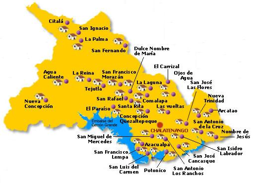

En lo que respecta a las actividades de la agricultura tradicionales, los cultivos más antiguos que se conocieron son el añil, de hecho el departamento de Chalatenango era uno de los máximos productores de añil, esto queda demostrado con la gran cantidad de obrajes que se han encontrado en todo el municipio. Algunos solo se puede encontrar los cimientos y otros están regularmente conservados. Todavía existen obrajes en el cantón San José, Canyuco, El Chuptal, El Limón, San Miguelito, en el cantón Upatoro en el terreno de doña Leonor Romero, en la colonia Veracruz y en la colonia Fátima en el terreno de don Isidro Hernán.
Chalatenango es un departamento ubicado al norte de El Salvador. Su cabecera departamental es Chalatenango. Su nombre en náhuat significa Valle de Aguas y Arenas. Fue fundado el 14 de febrero de 1855, y está dividido en 33 municipios. El clima frío y la belleza de los paisajes en su zona alta lo convierten en uno de los destinos más visitados del país. Este es un espacio creado para dar a conocer sus lugares turísticos, sus costumbres y tradiciones, sus historias e información de interés
Regresar